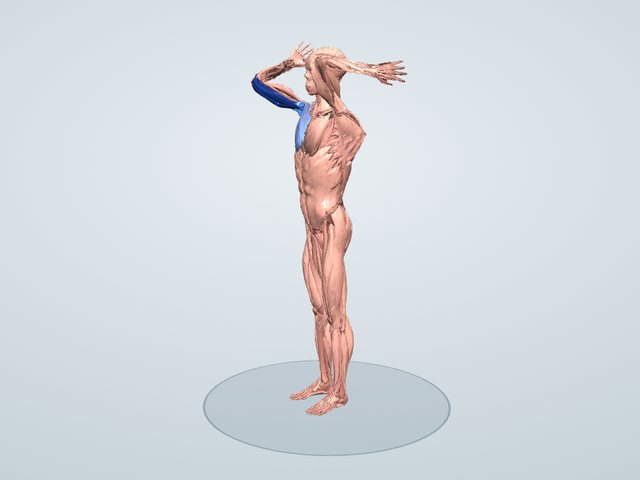

ストレッチ図鑑
頭の後ろで肘を引く(右)
腕を頭の上で曲げ、反対の手でひじを引くストレッチです。二の腕の裏(上腕三頭筋)と、脇の下から背中の広背筋・大円筋を伸ばします。
一般に伸ばされる筋: 上腕三頭筋・広背筋・大円筋
3Dで動かして見る 無料で見られます

伸びる筋のしくみ
上腕三頭筋は二の腕の裏にある筋で、そのうちの長頭は肩甲骨から始まるため、ひじを曲げたまま腕を頭の上へ上げると強く伸ばされます。広背筋と大円筋は上腕の内側に付き、腕を下へ引く働きをするので、腕を頭の上へ上げた姿勢で伸びます。腕立て伏せやプレス系の種目のあと、肩の上がりにくさが気になるときに向いています。
伸びる筋(3Dモデルでの計算)
伸ばした姿勢で、それぞれの筋が関節の動きで伸ばされうる最大の長さを100としたときに、どこまで伸びているかの推定です。青い札の「+◯%」は、立った姿勢のときより筋が何%長くなったかです。
- 上腕三頭筋 内側頭(左右)+22.3%100
- 肘筋(右)+24.5%73
- 烏口腕筋(右)+20.6%71
- 広背筋(左右)+37.8%70
- 大円筋(右)+53.2%69
- 大胸筋 胸肋部(右)+26.1%66
- 僧帽筋 上行部(下部)(左右)+12.6%51
- 大菱形筋(右)+18.5%31
やり方
- 右腕を頭の上へ上げ、ひじを曲げて手を背中へ下ろす
- 左手で右ひじを持つ
- 右ひじを頭の後ろへやさしく引く
- 二の腕の裏と脇が伸びるところで30秒保つ。左右を入れかえて行う
上体を反らさず、肘をまっすぐ上へ向けます。
ポイント
- 頭を前に倒さない
- 腰を反らさず、おなかを軽く締める
よくある間違い
- ひじを強く引きすぎて肩が痛む
- 腰が反り、体全体が後ろへ傾く
時間と回数の目安
左右30秒ずつ2回。
やさしくする方法
ひじを持たず、右手を背中に置くだけにする。
強く伸ばす方法
ひじを引いたまま上体を左へ倒すと、体の横(広背筋)まで強く伸びます。
注意すること
肩を上げると痛む人(五十肩など)は、無理に腕を上げないでください。
伸びる筋の割合は3Dモデルによる推定で、体格や柔軟性によって変わります。ストレッチは痛みのない範囲で行い、痛みやしびれが出たときは中止してください。持病やけががある人は、医師や専門家に相談してから行ってください。